11
Micrometer bridge
Ferromark
An asymmetric introduction and a thin precision bridge connect a wide Markdown specimen to its rendered result.
Ferramenta
Fine steel, controlled oxide, precise screws. Ten new light-theme homepage directions.
Ferromark
An asymmetric introduction and a thin precision bridge connect a wide Markdown specimen to its rendered result.
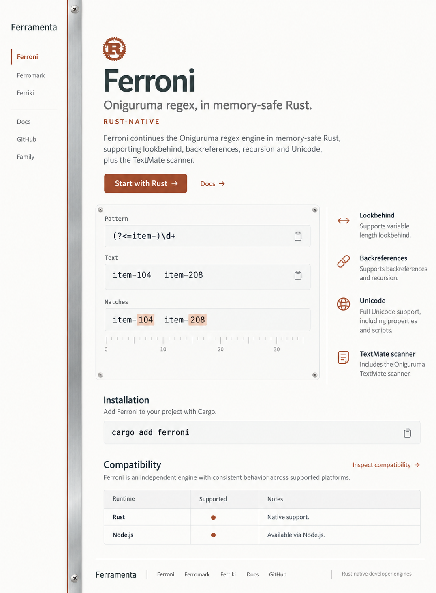
Ferroni
A slender vertical steel spine organizes left navigation, a live-looking regex specimen and right margin notes.
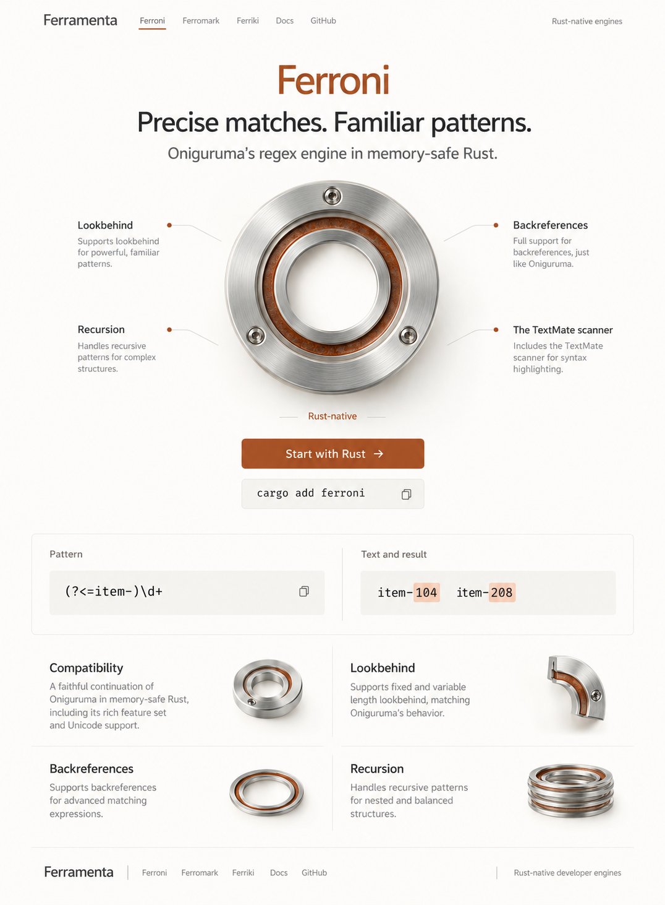
Ferroni
A centered circular precision bearing gives the page its geometry, followed by a horizontal regex demonstration.
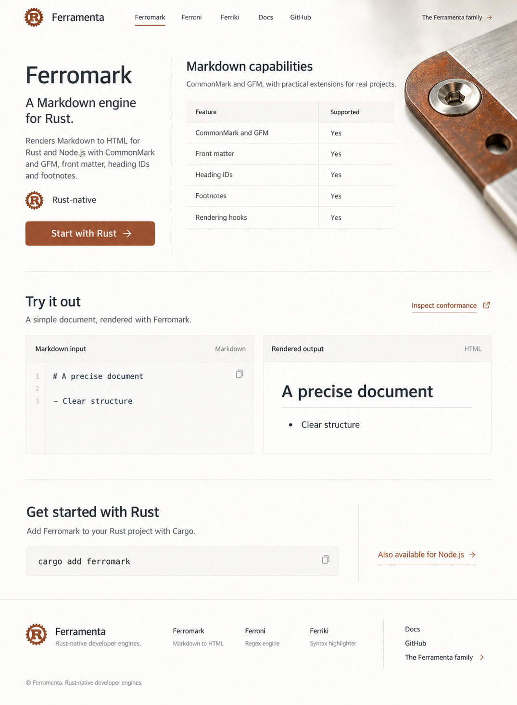
Ferromark
A quiet specification-led homepage opens with the document contract, while a tiny metal macro carries the brand.
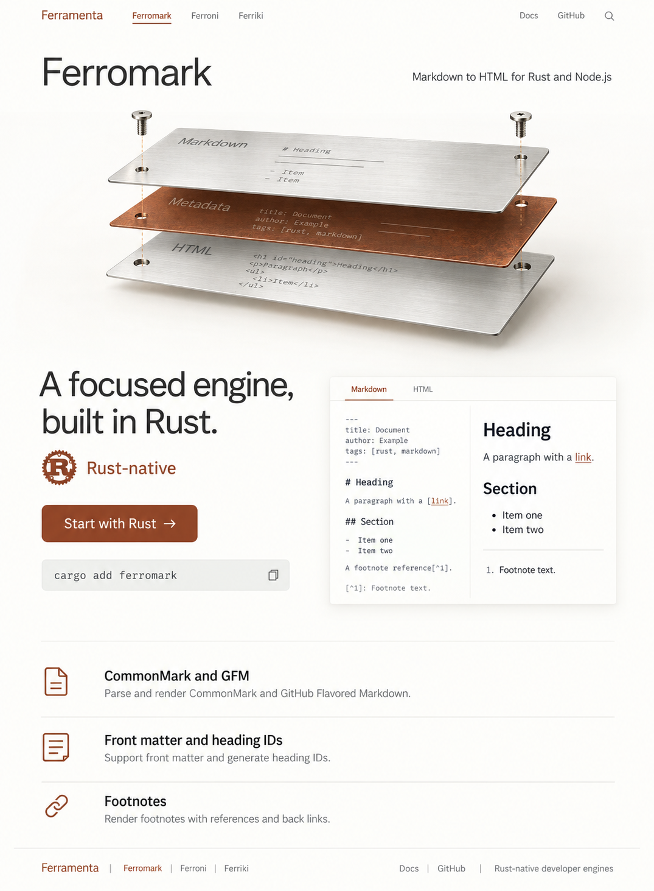
Ferromark
A thin exploded stack of steel document leaves sits between the product introduction and publishing features.
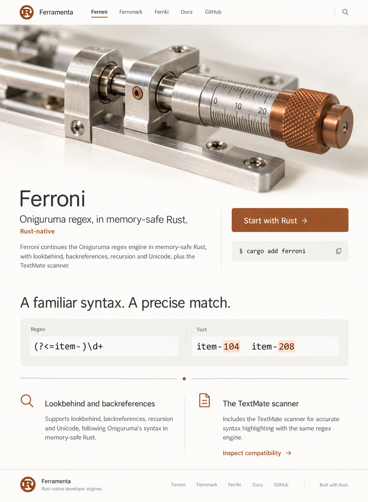
Ferroni
A panoramic view of a tiny adjustment mechanism opens the page, with product identity and actions in an offset caption.
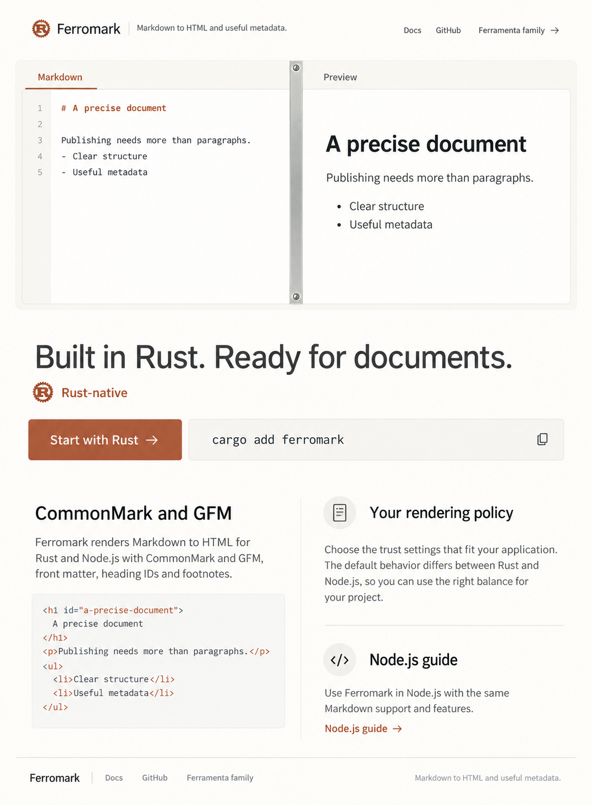
Ferromark
The document preview leads; a thin steel separation detail and tiny screws express precision inside the working surface.
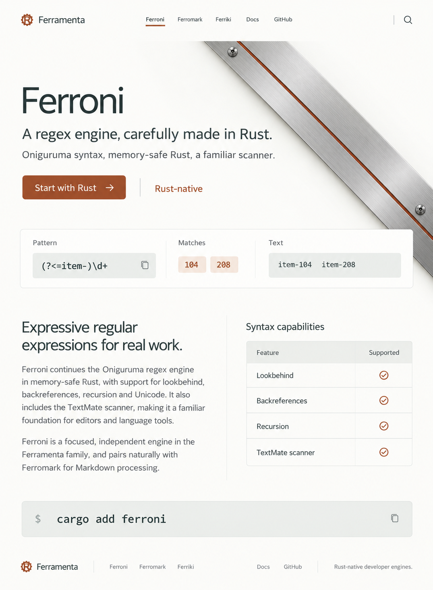
Ferroni
One elegant rust-colored inlay crossing a silver fold creates a spare, architectural page.
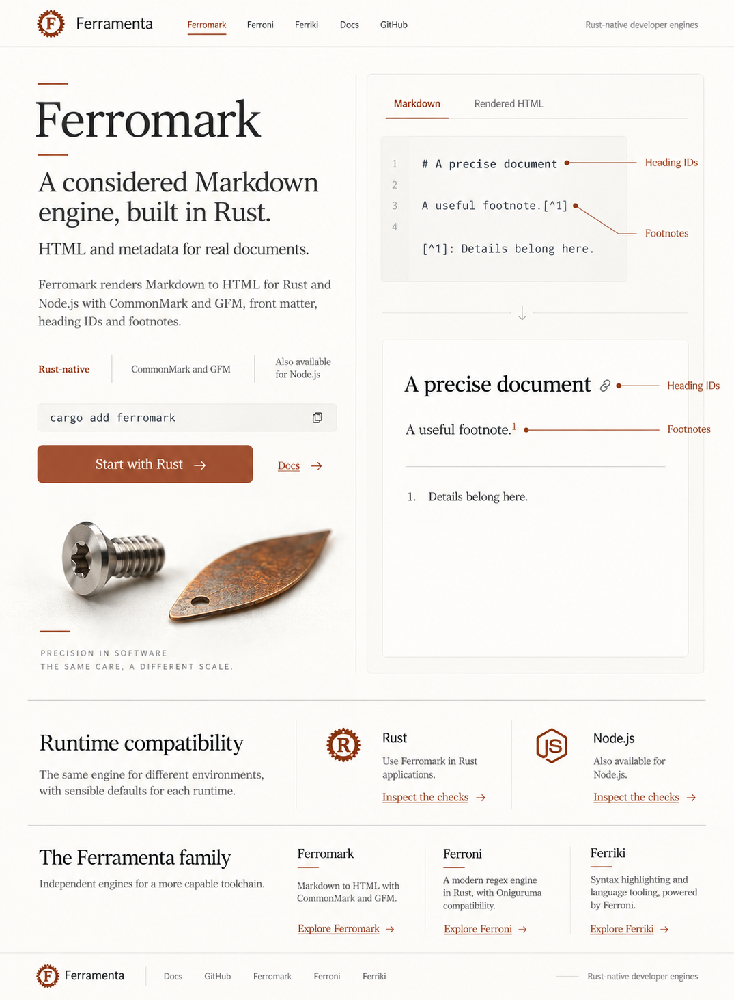
Ferromark
An open handbook composition pairs editorial explanation with a large annotated document sample and a small material study.
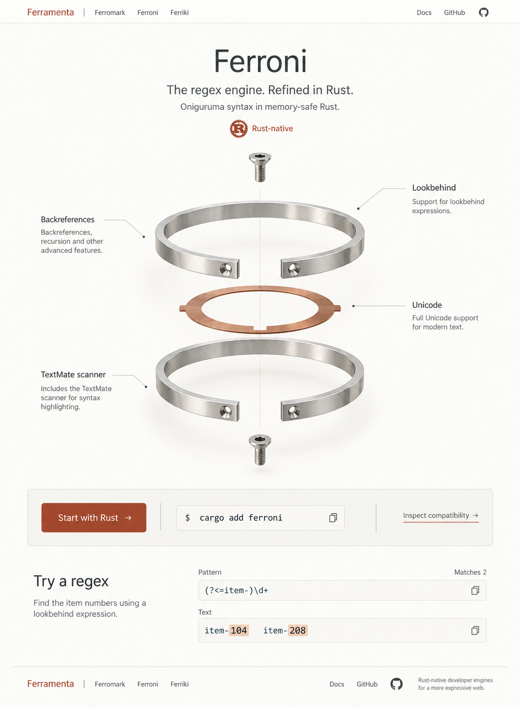
Ferroni
A central vertical exploded micro-assembly and surrounding syntax notes organize a light, precise product introduction.
Reusable masters generated for this exploration. These are separate assets inspired by the round, not extracted layers of the screenshot concepts.
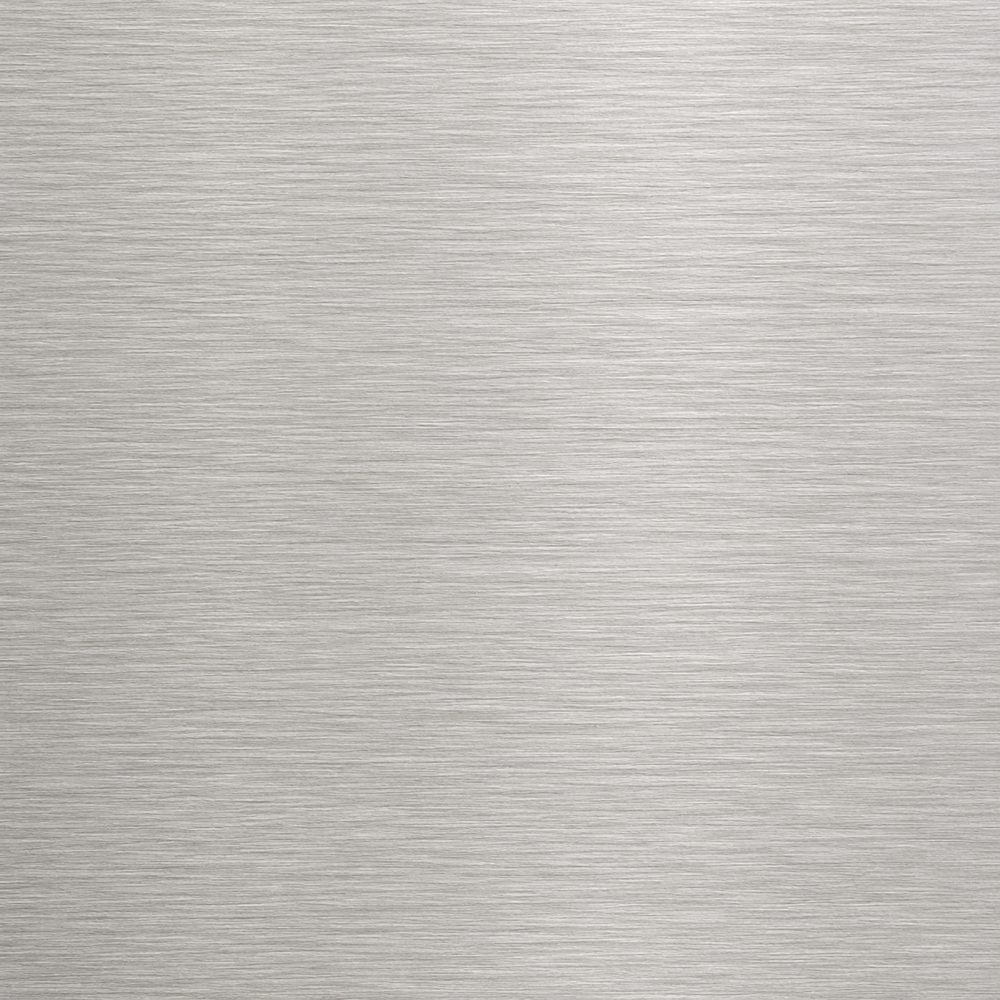
Independent material master; seamless tiling is not verified.
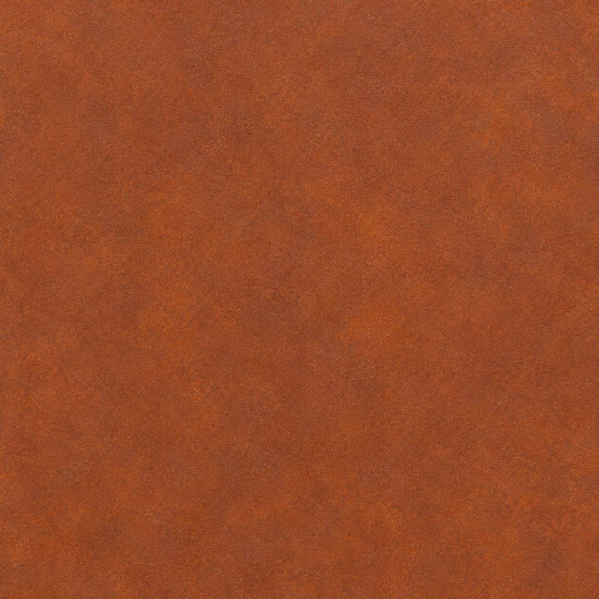
Independent material master; seamless tiling is not verified.
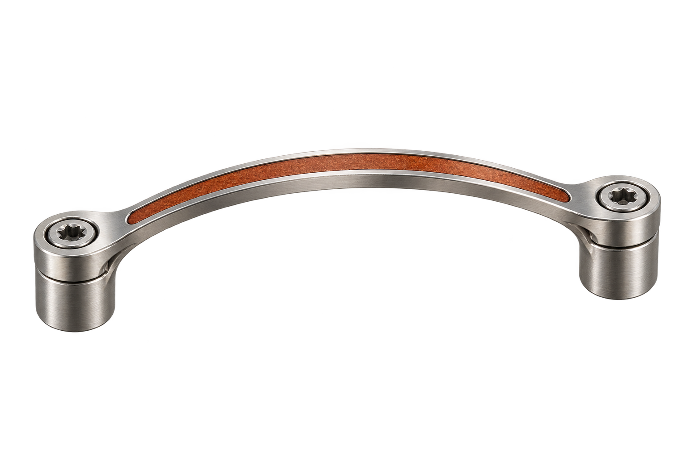
Transparent PNG cutout.